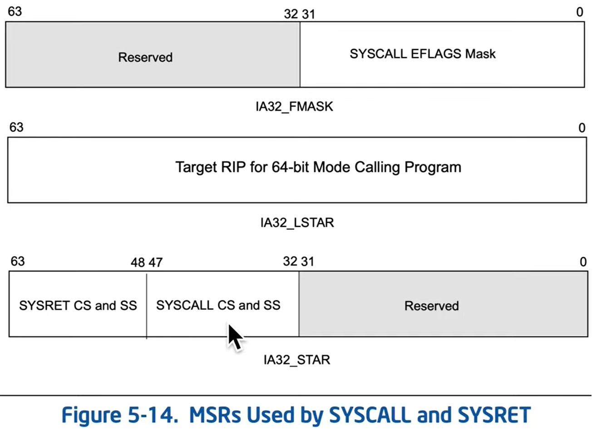

Privileged instruction
- Restore RIP from RCX.
- Restore RFLAGS from R11.
- Load CS with value stored in IA32_STAR MSR bits [63:48] and adds 16.
- Load SS with value stored in IA32_STAR MSR bits [63:48] and adds 8.
- Whichever side of kernel/user that saved RSP is responsible for restoring it.

When returning, CS might not have RPL=3, and as it must have RPL=3 in userspace to avoid kernel privileges in userspace.

The problem is solved in the microcode behind SYSRET instruction, which forces the RPL to 3 when returning:
in the pseudocode

Bitwise OR is preformed against CS, to ensure the last 2 bits are 0y11 (3).